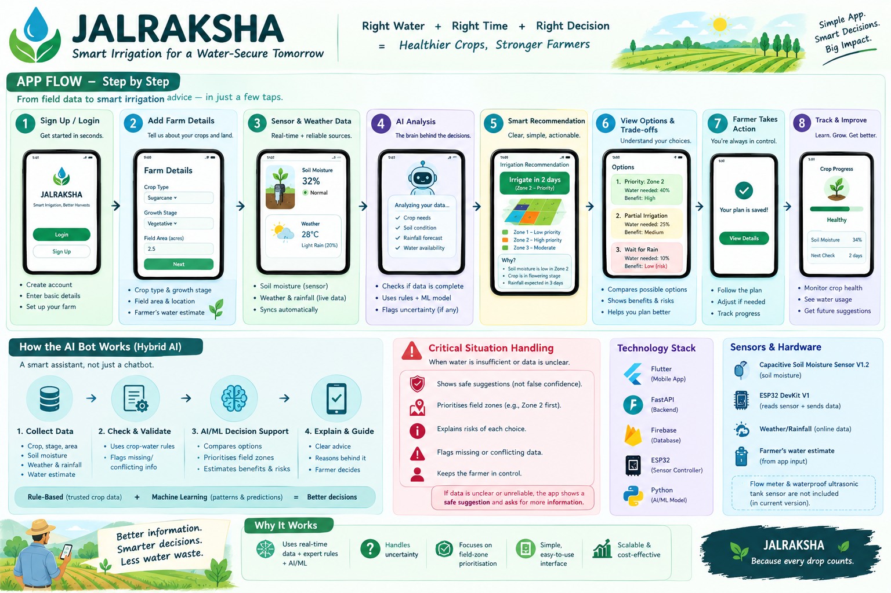

HOME PAGE
Introduction
 |
Name:- Shreya Raghunath Parhad
"First Year B.Tech CSE Student"
Aspiring Developer & Inovator |
I am a first-year B.Tech Computer Science student at Deogiri Institute of Engineering and Management Studies, Chhatrapati Sambhajinagar, building a strong foundation in C programming and web development. Passionate about creating practical, low-cost tech solutions for real-world problems and exploring new tools, I actively turn early ideas into hands-on projects as a member of my college's Technology and Innovation Club.
ABOUT PAGE
Education & Intrests
Current Studies:- |
B-Tech
At Deogiri Institute of Engineering and Management Studies, Chhatrapati Sambhajinagar |
Earlier Studies:- |
Higher Secondary schooling (HSC Class 12th)
At Shiv Chhatrapati jr college Chhatrapati Sambhajinagar |
Schooling
At ACE ACADEMY CBSE SCHOOL , Chhatrapati Sambhajinaga
|
,
I am currently in my first year of B.Tech in Computer Science and Engineering at Deogiri Institute of Engineering and Management Studies in Chhatrapati Sambhajinagar. Before starting engineering, I completed my higher secondary education in the Science stream at Shivchhatrapati Junior College and my schooling at Ace Academy CBSE School, and made my way into the program through the Maharashtra state engineering entrance exam.
Intrests
Tech & Coding :- learning new things in techonology or to learn ne programming language like java, c, python
Ideas and Inovations :- to creating and building new ideas
Communications:- public spwaking and sharing Ideas
Personal hobies:- Traveling,Dodgeball
I really enjoy learning new things and figuring out how to turn simple, practical ideas into real solutions whether that is through small projects, web development, or working with my college's Technology and Innovation Club. Outside of studies and tech, I love traveling to new places, playing sports like dodgeball, and practicing speaking and sharing ideas with others.
Even though I'm still a beginner, I really enjoy learning new technologies and building web things as I grow my skills. I like coming up with practical ideas for ideathons and figuring out how to turn simple ideas into real solutions.
Skills Page
I am currently building my technical foundation step by step as a first-year B.Tech CSE student. While I am still a beginner in many areas, I enjoy practicing every day, picking up new tools, and connecting what I learn in class with hands-on ideas.
- Programming & Web Basics:- C programming (foundational), HTML, and CSS
- Tools & Environment:- Visual Studio Code and basic web development setup
- Ideas & Collaboration:-Ideathon brainstorming, turning practical ideas into simple solutions, public speaking, and working with my college's Technology and Innovation Club
- Currently Exploring:- Better HTML structure, CSS styling, and turning basic concepts into small practice pages
- Mindset:-Curious, consistent, and open to feedback as I grow step by step
PROJECT PAGE
1.JALRAKSHA — Smart Irrigation System
Overview: A low-cost smart irrigation concept focused on water conservation for farming.
My Role: Idea planning, hardware-software concept structure, and presenting the solution.

JALRAKSHA is a smart agriculture solution designed to help farmers manage limited water efficiently, especially during droughts and water shortages. It combines soil-moisture sensors, crop-growth information, rainfall data, and available-water estimates to provide suitable irrigation recommendations. Its proposed hybrid AI system helps compare options, identify critical situations, and prioritize field areas when water is insufficient. Farmers can select drip irrigation, set the required flow rate and duration, choose the field zone, and control the motor through the application. JALRAKSHA aims to reduce water wastage, support better farming decisions, and promote sustainable agriculture .
2. Plant Watering System — Arduino Project
Overview: An automated plant-watering system using an Arduino Uno, soil moisture sensor, 5V relay module, mini water pump, and LED indicator to water plants automatically when soil gets dry and stop once wet.

Contact Page
☎️ phone:91+ 7276079844
✉️email:srparhad08@gmail.com
[in] linkedin: linkedin.com/in/shreya-parhad
Github:https://github.com/srparhad08-beep
THANK-YOU!!